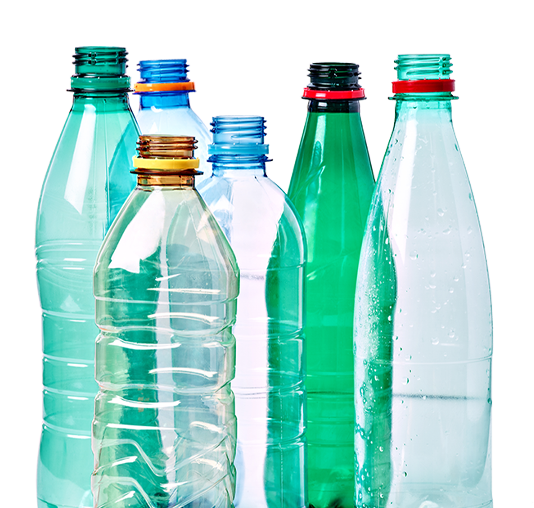
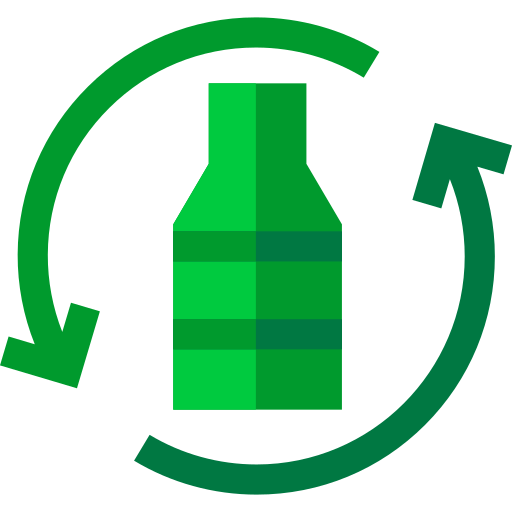
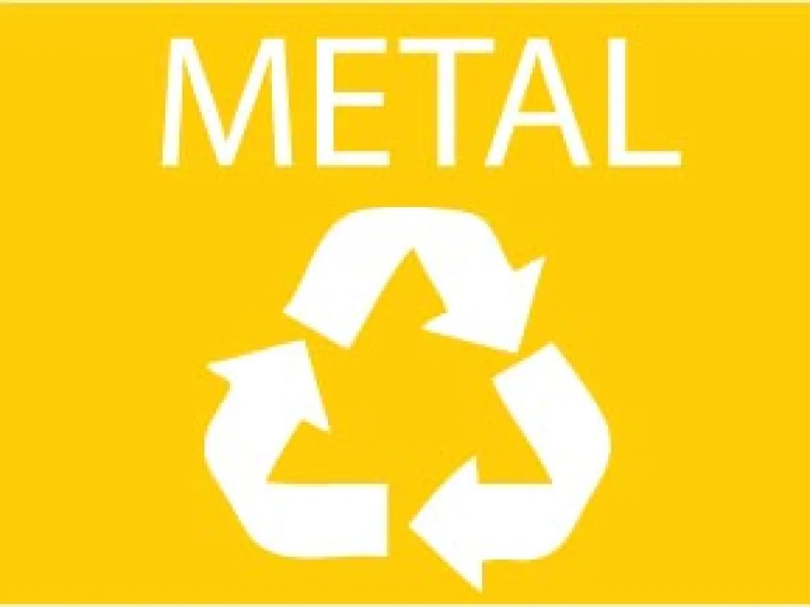

Como Fazer a Reciclagem
A reciclagem é um processo importante para preservar o meio ambiente. Aqui você encontra orientações para reciclar corretamente.
Reciclagem de Plástico
Lave os recipientes plásticos antes de reciclá-los e separe os diferentes tipos de plástico. Evite misturar plásticos com outros materiais.
Reciclagem de Papel
Evite molhar ou sujar o papel que será reciclado. Separe papéis brancos de papéis coloridos e remova clipes e grampos antes de reciclá-los.
Reciclagem de Vidro
Remova tampas e lave os recipientes de vidro. Separe vidros por cor quando possível e evite quebrar o vidro antes de reciclá-lo.
Reciclagem de Metais
Separe latas de alumínio de outros metais. Amasse as latas para economizar espaço e não se esqueça de lavar os recipientes antes de reciclá-los.
